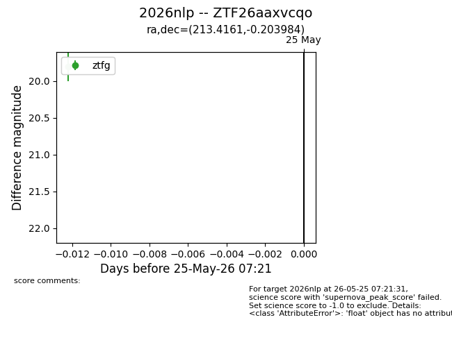
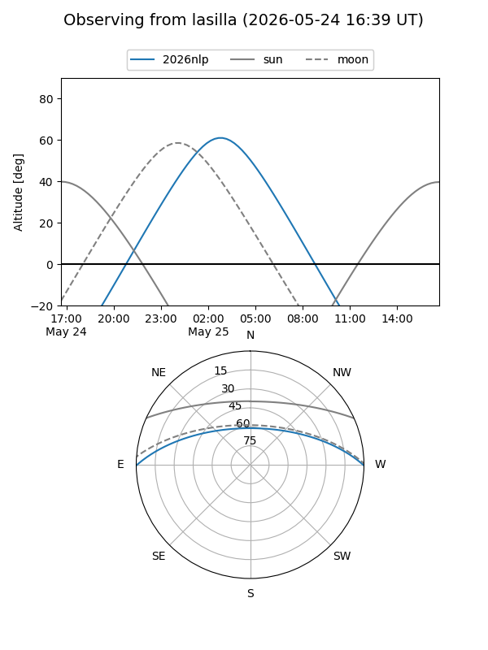
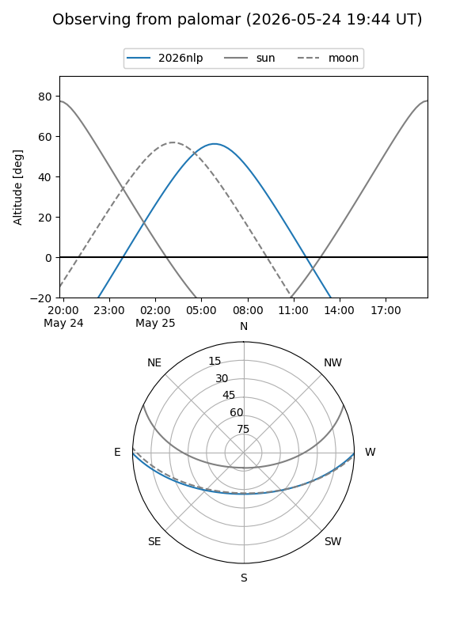

2026nlp
Target 2026nlp at 2026-05-25 07:23
Aliases and brokers:
lsst-FINK: link
lsst-Lasair: link
lsst-ALeRCE: link
ztf-FINK: link
ztf-Lasair: link
ztf-ALeRCE: link
TNS: link
YSE: link
alt names
ZTF26aaxvcqo (ztf,fink_ztf)
2026nlp (tns,yse)
Coordinates:
equatorial (ra, dec) = 213.4161,-0.20398
equatorial (HMS+DMS) = 14:13:39.87,-00:12:14.34
galactic (l, b) = (342.1589,+56.27273)
Flags:
TNS confirmed: nan
Photometry:
last ztfg=19.81
1 ztfg detections
Lightcurve

Visibility


Additional plots